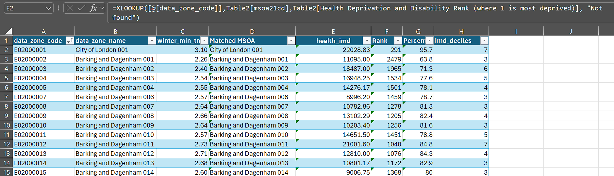
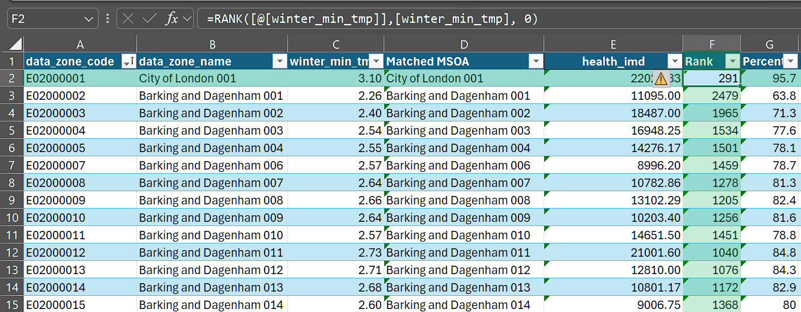
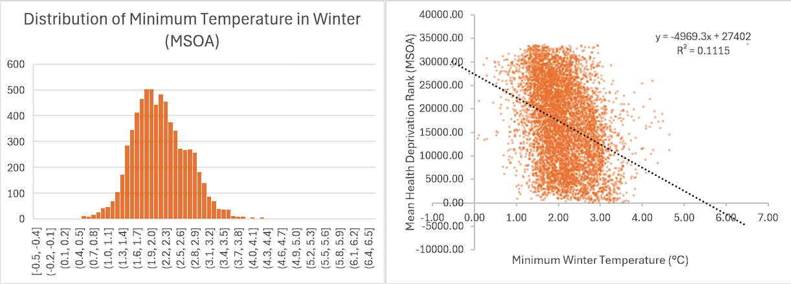

Data Insights with Excel
Goal: Use Excel to explore Imago MSOA-level data, identify statistical patterns, and prepare simple tables or charts that highlight hotspots or relationships with deprivation. This session focuses on sorting, filtering, ranking, grouping, and visualising patterns.
Load the Imago Product (CSV/Excel File)
Open the product file (e.g., Heat, Pollution, SPF at LSOA level).
The imago dataproducts can be found here. Have a look!

Check your data includes these key columns:
- MSOA Code (unique identifier) - “data_zone_code”
- MSOA Name
- A variety of temperature variables
annual_mean_tmp,winter_min_tmp. etc.
Format the dataset as a Table (Ctrl+T) for easy filtering and formulas.
Add Contextual Data (Optional)
Imago datasets are available at commonly used levels of aggregation such as MSOA and LSOA. Matching data in Excel can be as simple as copy-pasting your contextual data alongside Imago data—if you’re working with the full dataset. For partial matches or more complex joins, use VLOOKUP or XLOOKUP.
Using VLOOKUP:
=VLOOKUP([@[data_zone_code]], ContextData!A:B, 2, FALSE)
Using XLOOKUP (Excel 365):
=XLOOKUP([@[data_zone_code]],Table2[msoa21cd],Table2[Health Deprivation and Disability Rank (where 1 is most deprived)], "Not found")

In this example, the contextual data is stored in a separate table (Table 2). This dataset is an MSOA-level compilation of the LSOA-level IMD indicator components and ranks, available here. It was derived using the processes described in Explore datasets with R/Python.
- Ensure MSOA/LSOA codes are formatted consistently as text, with no leading or trailing spaces.
- Use
=TRIM()to clean codes if needed. - Check for mismatches using conditional formatting,
COUNTIF, orEXACT.
Explore Patterns
Filtering & Sorting
To filter:
Click the dropdown arrow in any column header
Select specific values, or use “Number Filters” for conditions like “Greater than” or “Top 10”
To sort:
Click the dropdown arrow → Sort A to Z (ascending) or Z to A (descending)
For multi-level sorts: Data tab → Sort → Add Level
Try these:
Filter using a threshold to show the most deprived areas.
Sort by
winter_min_tmpto find highest/lowest MSOAs
Ranking: Add a rank column to identify top and bottom performers:
=RANK([@[winter_min_tmp]],[winter_min_tmp], 0)
- Use 0 for descending rank (highest value = rank 1)
- Use 1 for ascending rank (lowest value = rank 1)
Percentile ranking:
=(PERCENTRANK.INC([winter_min_tmp],[@[winter_min_tmp]]))*100
This shows where each MSOA falls within the distribution (0 to 100 scale).

Conditional Formatting:
Visualise patterns directly in your spreadsheet:
- Select the
winter_min_tmpcolumn - Home tab → Conditional Formatting → Color Scales
- Choose a gradient (e.g., Red-Yellow-Green)
Creating summary stats
Using PivotTables:
We can calculate the deciles for the health_imd using:
=CEILING(PERCENTRANK.INC([health_imd], [@[health_imd]]) * 10, 1)
Then, we can see the Winter Minimum Temperature for each such decile using a pivot table:
- Select your data table
- Insert tab → PivotTable
- Drag fields to build your summary:
Rows: Health IMD Decile | Values: winter_min_tmp (set to Average)

Generally, it looks like the IMD rank and lowest winter temperature have a negative correlation. (Why?)
A simple correlation (=CORREL(Table1[winter_min_tmp],Table1[health_imd])) shows the correlation between the two is 0.23.
Using Charts
Scatter Plot: Minimum Winter Temperature vs IMD Rank
- Select the Minimum Winter Temperature and IMD Rank columns
- Insert → Scatter Chart
- Add a trendline: Click chart → Chart Design → Add Chart Element → Trendline → Linear (Or use Quick Layout in the Chart Design tab)
Histogram: Distribution
- Select Metric Value column
- Insert → Charts → Histogram

Further explorations
Consider exploring more! The MSOA-level file contains a number of additional variables worth investigating:
Compare seasonal patterns: How does winter minimum temperature relate to summer maximum? Are certain areas consistently extreme across seasons?
Cross-reference with deprivation: Join other IMD variables and examine whether temperature extremes fall disproportionately on more deprived communities.
Regional comparisons: Filter by local authority or region to see how various areas compare to national patterns.
Create a simple dashboard: Combine a PivotTable, a scatter plot, and conditional formatting on a single sheet to build an at-a-glance summary.
Identify outliers: Use percentile rankings to flag MSOAs that fall outside expected ranges—these may warrant further investigation.